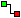

Paneelkeuze en kies
Nieuw standaardpaneel. Je krijgt een leeg paneel met links de onderdelenbalk.
Paneelkeuze en kies
Nieuw standaardpaneel. Je krijgt een leeg paneel met links de onderdelenbalk.In vijf stappen van een leeg paneel naar een werkende schakeling. Als voorbeeld: een lamp die alleen brandt als twee schakelaars aan staan (een EN-poort).
Klik op Paneelkeuze en kies
Nieuw standaardpaneel. Je krijgt een leeg paneel met links de onderdelenbalk.
Een geplaatst onderdeel verplaats je door het met de linkermuisknop te slepen.

Verbinding. De muisaanwijzer wordt een draad.Meer hierover in Verbindingen.
Klik op  Start simulatie.
De bewerkknoppen en de onderdelenbalk verdwijnen. Klik op de schakelaars: de lamp brandt
alleen als beide aan staan. Klik nog eens op de simulatieknop om terug te gaan naar bewerken.
Start simulatie.
De bewerkknoppen en de onderdelenbalk verdwijnen. Klik op de schakelaars: de lamp brandt
alleen als beide aan staan. Klik nog eens op de simulatieknop om terug te gaan naar bewerken.
Klik op  Paneel opslaan en geef een naam.
Panelen worden bewaard als
Paneel opslaan en geef een naam.
Panelen worden bewaard als .lpl-bestand in de map panels.
Met  Open paneel haal je het later terug.
Open paneel haal je het later terug.